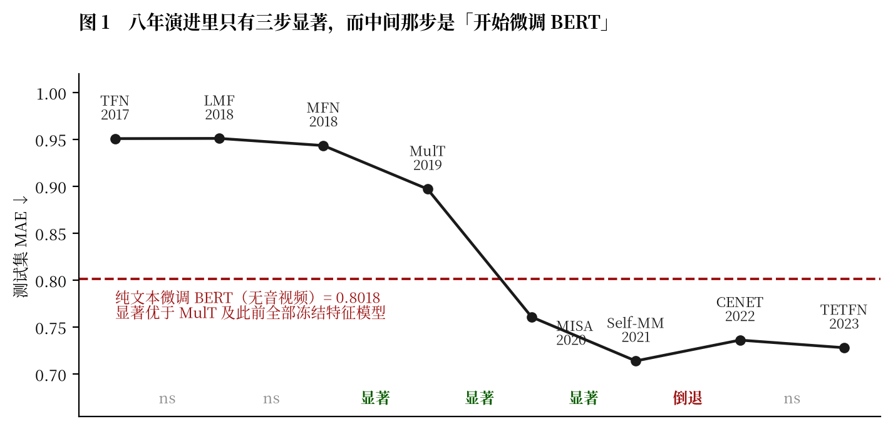
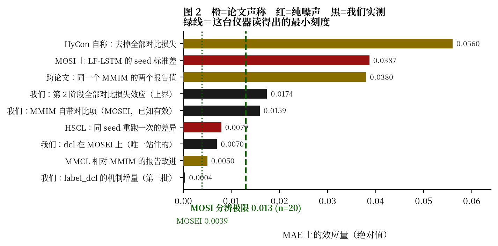
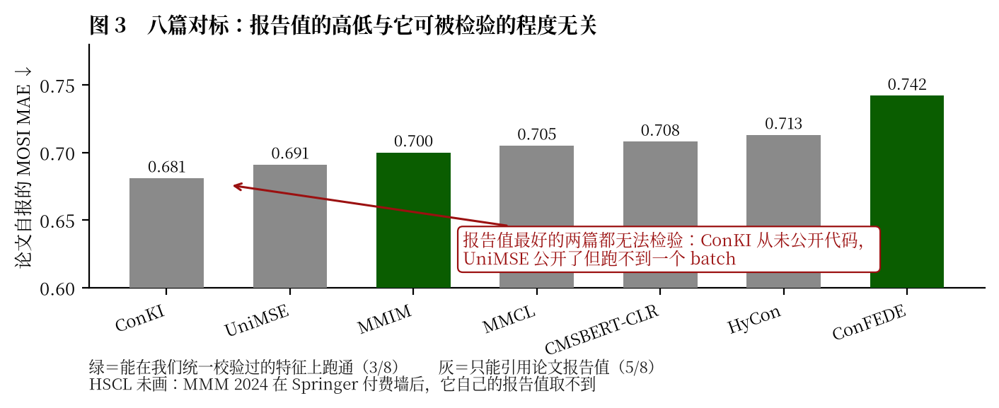
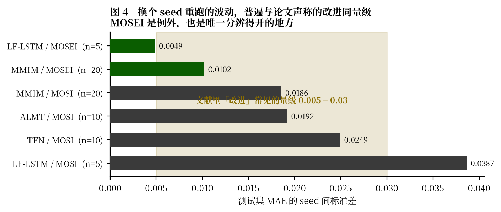

三个阶段测出的是同一件事：这个方向上"改进"的报告口径，普遍宽于测量精度本身。
本报告按四张图展开。图 2 是核心——它把「论文声称的效应」「纯噪声」 「我们实测的效应」放在同一根坐标轴上，与这套数据能分辨的最小刻度比。

outputs/ 下可重算的落盘结果。复现 14 个模型（2017–2023）后，逐一检验相邻台阶是否真的显著， 得到的图景与榜单排序很不一样：
红线是这张图的关键。我们加了一个对照组： 只微调 BERT、完全不用音视频，得到 0.8018——显著优于 MulT 及此前全部冻结特征的模型，与 MISA 在 Corr 和 Acc-2 上统计不可区分。
把两件事合起来读：真正显著的三步里，中间那步恰好是"开始微调 BERT"。 这条八年演进可归结为：冻结特征时代内部无显著进步 → 换成微调文本编码器带来 唯一一次真实跃升 → 此后进入平台期。融合结构的设计贡献，远小于编码器换代。

这张图要说的是：横轴上这些量，有一大半落在绿线左边——也就是这套数据 根本分辨不出来。
| 读法 | 含义 |
|---|---|
| 红条落在绿线右边 | 纯噪声比分辨极限还大。MOSI 上 LF-LSTM 换个 seed 重跑，MAE 波动 0.0387 |
| 橙条 0.038 | 同一个已发表的 MMIM，在两篇论文里被报成 0.700 与 0.738（一个 unaligned、一个 aligned，两边都没错）——跨论文分歧是我们分辨极限的三倍 |
| 橙条 0.056 | HyCon 自己的消融声称对比学习值这么多。若在我们的协议下成立，不可能测不出来 |
| 黑条最长者 0.0174 | 我们第 2 阶段全部对比损失效应的上界——整批候选都挤在绿线附近 |
这解释了第 2 阶段为什么反复测不出东西：不是方法不行， 是那个效应量本来就在噪声以下。而这不是事后辩解——MDE 只取决于样本量和标准差， 事前就能算出来。
老师最该追问的是"是不是没调好"。三条正面回答：
0.000e+00）。灵敏度是测量值，不是假设。dcl 的优势缩了一半；
我们自己设计的 label_dcl，机制增量归零（+0.0044 → +0.0004，
Corr 符号翻转）。损失线上最后站得住的只有：一个文献已有的去耦合对比项（dcl）让
MMIM 在 MOSEI 上改进约 0.007 MAE（相对 1.3%）——那不是我们的设计。
产出形式仍然完整：设计了损失、做了单一机制的消融、三批独立 seed、判据全部先立后测。
结论是负面的，而这个负面结论本身是可信的产出。

docs/benchmark_contrastive.md），无一凭记忆填写。老师要求复现 8 篇含对比学习的论文做对标，篇目由我们自定。选取标准：方法里确有 对比学习项、在 MOSI/MOSEI 上报回归指标、覆盖 2021–2024，并优先有公开代码—— 能跑通的才叫复现。
| 档 | 篇数 | 论文 |
|---|---|---|
| A 在我们 sha256 校验过的特征上跑通 | 3 | MMIM、ConFEDE、HSCL |
| B | 0 | —— |
| C 只能引用论文报告值 | 5 | UniMSE、HyCon、ConKI、CMSBERT-CLR、MMCL |
这个计数本身是结论的一部分。八篇里
四篇从未公开代码；第五篇 UniMSE 公开了，但兼容层全部做完、数据按我们的
划分加载成功、T5 载入、optimizer 建好之后，死在第一个 batch——它发布版
读原始数据的那条路径与自己的 collate_fn 不一致，作者实际跑的预处理文件
不在仓库里，而那些文件把论文的"统一标签空间"烘在里面，我们的特征无从替换。
而 UniMSE 恰好是全表报告值第二好的那篇。
A 档里靠读代码和跑受控对照拿到的三条：
main.py 没有 seed 循环，三个编码器只预训练一次，
五个融合 seed 共用同一套权重。
这张图解释了为什么我们坚持多 seed、以及为什么要转向 MOSEI：
cudnn.deterministic，那只管 cuDNN 卷积，管不到 BERT 反向里的原子加。对照我们自己的做法：check_repro.py 是 12 道闸门之一，
专门问"同一台机器连跑两次是否逐比特一致"；LF-LSTM 默认路径的预测哈希
172967c7dced83b2 贯穿多次重构未变。这不是讲究——没有这道闸门，
"改动 A 带来了 0.005 的提升"这句话根本无法成立，而这整个阶段读到的就是
这句话被反复说出来。
老师提的第三件事。改的位置是 ALMT 的 _HyperLayer：文本做 query、音频与
视觉各做 key/value，两路注意力结果以固定权重 1 相加才过输出投影——
从不相互加权。门控从形成 query 的那份文本读出两个权重去加权这两路。
alpha=0 逐比特等于发布版 ALMT，而这是测出来的。
把门控参数加上 10 倍标准差的随机扰动后：
| 检查 | 输出最大绝对差 | 要求 |
|---|---|---|
| alpha=0，门控参数被大幅扰动 | 0.000e+00 | 须为 0（门控确实够不到输出） |
| alpha=0.5 | 2.29e-03 | 须非 0（门控确实接上了） |
两头都测是必要的：只测前者，"等价"也可能是因为门控压根没接上——
那样消融两臂之差恒为零，会以"无效应"的面目通过，而其实什么都没测。
这道检查已进 check_all.sh。
判据在运行前已定稿并推送：seeds 200–219（n=20 每臂）、验证集 MAE 与 Corr、Welch 单侧 + BH 校正、效应必须达到 MDE 0.0114 否则记「未检出」、 不做 alpha 扫描（图 2 已经说明，在检出力不足处多试取值只会制造假线索）。
为什么这值得测、而不是又一个微弱杠杆：第 1 阶段的模态消融显示 MOSI 上音视频 几乎不携带信息，而 ALMT 恰好把这两路无条件等权相加。门控若有用，方向应当是 学会压低无信息的那一路——一个有机制、可证伪的预测。
scripts/verify_runs.py 从落盘预测重算指标，
scripts/reproduce_all.sh 重跑全部实验，scripts/check_all.sh 跑 12 道闸门，
scripts/make_report_figures.py 重画本报告四张图。
文档：docs/storyline.md（逐模型复盘）、docs/experiments.md（全部数字）、
docs/investigations.md（排查记录，含每一次自我更正）、
docs/decisions.md（判据与理由）、docs/benchmark_contrastive.md（8 篇名单与分档）。